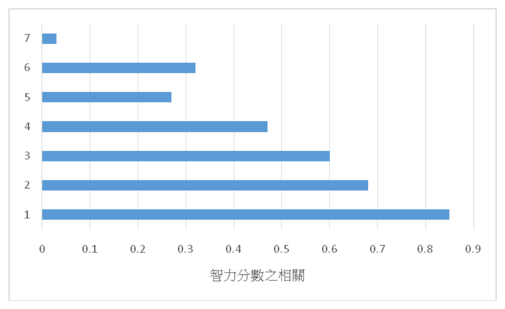

開卷有益 ／
臨床心理師 ／ 臨床心理學基礎 ／ 111 年111 年臨床心理師臨床心理學基礎試題與答案
這一頁是民國 111 年臨床心理師臨床心理學基礎的整份歷屆試題，共 40 題，題目與標準答案出自考選部「國家考試試題及測驗式試題答案」開放資料，其中 40 題附有詳解。以下逐題列出題幹、選項與答案；要計時作答或記錄成績，請用線上練習。
考選部原始場次代碼：1
線上作答這一科 →
全部 40 題
第 1 題
心理學家想研究某一概念時，會先界定此概念並提出實際可行的量測方式，使有意探討此概念的人知道所談為何，以利彼此溝通。下列何者最符合此一描述？
（A） 操作型定義（B） 假設定義（C） 學術語言（D） 實驗設計答案：（A）
詳解與考點 考點為研究方法中的操作型定義（operational definition）。正解 A 指將抽象概念轉化為可觀察、可量測的具體程序，使研究者間能對「所談為何」有共識，正是題幹描述。陷阱在 D 實驗設計，它是安排變項與控制的整體架構，屬於研究流程而非「界定並量測單一概念」，故易誤選但層次不同。
第 2 題
文獻上有一關於little Albert的心理學實驗，是何位學者所執行？
（A） J. B. Watson（B） L. L. Thurstone（C） W. James（D） J. Piaget答案：（A）
詳解與考點 考點為行為學派的經典實驗史。小 Albert 恐懼制約實驗由華生（J. B. Watson）與 Rosalie Rayner 於 1920 年執行，證明情緒可經古典制約習得，故正解 A。陷阱常是 D 皮亞傑（認知發展）與 C 詹姆士（機能論），兩人雖知名但與此恐懼制約實驗無關，憑「心理學名人」直覺最易誤選。
第 3 題
下列關於大腦各區域分工的敘述，何者錯誤？
（A） 大腦皮質的Broca區域和視覺刺激的處理有密切關係（B） 小腦（cerebellum）與動作的調控有密切關係（C） 腦幹（brain stem）負責調控心跳、呼吸、嘔吐、吞嚥等與維生有關的反射（D） 下視丘（hypothalamus）調控許多內分泌系統答案：（A）
詳解與考點 考點為大腦功能分區。題目問「錯誤」者，正解 A：Broca 區位於額葉，主司語言「產出」，與視覺處理無關（視覺由枕葉負責）。B 小腦調控動作、C 腦幹維生反射、D 下視丘調控內分泌皆正確。陷阱是把 Broca 區與視覺連結看似合理，但 Broca 是語言區，方向完全錯。
第 4 題
下列那一個因素可以使神經元動作電位（action potential）的傳導速度加快？
（A） 細胞膜外的氯離子濃度上升（B） 細胞膜內的鈣離子濃度上升（C） 神經元細胞膜出現破洞（D） 神經元軸突的直徑加大變粗答案：（D）
詳解與考點 考點為動作電位傳導速度的決定因素。正解 D：軸突直徑加大可降低內阻、加快傳導（髓鞘化亦同效）。陷阱多為前三項，C 細胞膜破洞會破壞電位、A、B 離子濃度改變影響興奮性而非單純加速傳導。直覺以為「離子變化就會加速」最易誤選。
第 5 題
血清素回收抑制劑（SSRI）經常被用來治療下列何種心理疾患？
（A） 躁鬱症（B） 憂鬱症（C） 思覺失調症（D） 亨丁頓舞蹈症答案：（B）
詳解與考點 考點為精神藥理學中 SSRI 的適應症。SSRI 提升突觸間血清素濃度，主要用於治療憂鬱症，故正解 B。陷阱在 A 躁鬱症（常用情緒穩定劑如鋰鹽）與 C 思覺失調症（用抗精神病藥），雖同屬精神疾患但用藥機轉不同，僅憑「精神科常見病」易誤選。
第 6 題
正子掃描（PET）與功能性磁振造影（fMRI）之差別為何？
（A） 前者有較清晰的圖，可評估大腦血塊所在位置（B） 前者可較清晰的辨別個體正在聽音樂或是執行數學運算時，大腦部位的活化狀態（C） 前者有水平、縱切以及橫切面的三度空間解剖掃描圖，而後者只有水平面掃描圖（D） 前者須注射特定化學物質於受試體內，後者則不需要答案：（D）
詳解與考點 考點為腦造影技術 PET 與 fMRI 之比較。正解 D：PET 需注射放射性示蹤劑，fMRI 利用血氧訊號（BOLD）不需注射。陷阱在 B，兩者皆可顯示任務時腦區活化，並非 PET 獨有；C 對切面的描述也不符兩者實際成像方式，憑模糊印象易誤選。
第 7 題
在艾瑞克森（E. Erikson）的人格理論中，勤勉vs.自卑（industry vs. inferiority）大致發生在那一段時間？
（A） 3～6歲（B） 6～12歲（C） 12～18歲（D） 18～29歲答案：（B）
詳解與考點 考點為艾瑞克森心理社會發展八階段。勤勉對自卑為學齡期任務，約 6～12 歲，故正解 B。陷阱在 A 3～6 歲（主動對罪惡）與 C 12～18 歲（認同對角色混淆），相鄰階段年齡易混淆，需記住「勤勉＝小學階段」對應學業表現。
第 8 題
八年級的小芷、小敏還有小昭經常一起出去玩，她們不只穿的衣服相像，連興趣及人格特質都很相似。發展心理學家通常會用下列何種概念來描述這樣的組合？
（A） 群夥（crowd）（B） 死黨（clique）（C） 盟友（ally）（D） 聯盟（alliance）答案：（B）
詳解與考點 考點為青少年同儕團體分類。死黨（clique）指人數少、關係緊密、興趣與特質高度相似的小團體，符合題幹三人組描述，故正解 B。陷阱是 A 群夥（crowd），它為依名聲或刻板印象界定的較大鬆散群體，互動不必親密，易與 clique 混淆。
第 9 題
小美在玩躲貓貓的時候躲在門後面而且閉著眼睛，她以為自己閉著眼睛別人就看不見她了。根據皮亞傑（J. Piaget）理論，小美表現出了何種思考特徵？
（A） A非B搜尋錯誤（A-not-B search error）（B） 可逆性（reversibility）（C） 片見性（centration）（D） 自我中心（egocentrism）答案：（D）
詳解與考點 考點為皮亞傑前運思期特徵。小美以為自己看不見別人別人就看不見她，是無法區分自己與他人觀點，即自我中心（egocentrism），故正解 D。陷阱在 C 片見性（只專注單一面向）與 A 非B搜尋錯誤（感覺動作期物體搜尋），概念雖屬皮亞傑但對應現象不同。
第 10 題
根據認知發展理論，性別認同（gender identity）在獲得性別恆定性（gender constancy）後才趨穩定。下列何種認知能力與性別恆定的發展最有關聯？
（A） 物體恆存（object permanence）（B） 象徵思考（symbolic thought）（C） 觀點取替（perspective taking）（D） 保留概念（conservation）答案：（D）
詳解與考點 考點為性別恆定性的認知基礎。性別恆定指理解性別不因外觀改變而變，與保留概念（conservation，理解本質不因表象改變而變）同源，故正解 D。陷阱在 A 物體恆存（感覺動作期）與 C 觀點取替，雖皆認知能力，但與「不變性」邏輯最對應者為保留概念。
第 11 題
下列何者最不可能是色盲的類型？
（A） 藍黃色盲（B） 青紫色盲（C） 紅色盲（D） 綠色盲答案：（B）
詳解與考點 考點為色覺缺陷類型。常見色盲源自三色覺理論的視錐缺陷：紅色盲、綠色盲（紅綠色盲）與藍黃色盲。青紫色盲非標準分類，故「最不可能」者為 B。陷阱是 A 藍黃色盲雖較罕見但確實存在（第三色覺缺陷），易被誤判為不可能，但真正非典型的是青紫色盲。
第 12 題
臨床上往往使用測驗來作疾病的初步篩檢，若用訊號偵測理論（signal detection theory）的概念來做說明，下列何者最正確？
（A） 當某測驗篩檢顯示為陰性，病人確診無病時，稱為失誤（miss）（B） 當某測驗篩檢顯示為陽性，病人確診有病時，稱為命中（hit）（C） 當某測驗篩檢顯示為陽性，病人確診無病時，稱為正確拒絕（correct rejection）（D） 當某測驗篩檢顯示為陰性，病人確診有病時，稱為正確拒絕（correct rejection）答案：（B）
詳解與考點 考點為訊號偵測理論的四象限。陽性且確診有病即正確判定，稱命中（hit），故正解 B。陷阱在 C：陽性但確診無病應為假警報（false alarm）而非正確拒絕；D 陰性但有病應為失誤（miss）。四象限的命名易張冠李戴，須對準「有訊號／有反應」才是命中。
第 13 題
下列那一個現象最適合用來說明雙眼的深度知覺？
（A） 雙眼競爭（binocular rivalry）（B） 雙眼像差（binocular disparity）（C） 雙眼遮蔽（binocular masking）（D） 雙眼移動（binocular motion）答案：（B）
詳解與考點 考點為雙眼深度知覺機制。兩眼位置不同造成視網膜影像的差異，即雙眼像差（binocular disparity），大腦據此計算深度，故正解 B。陷阱在 A 雙眼競爭（兩眼影像衝突時交替知覺），屬知覺現象但與深度判斷無關，名稱相近最易誤選。
第 14 題
如果一個人的視網膜只有錐狀細胞（cone），沒有桿狀細胞（rod），則：
（A） 此人白天的視力會很差（B） 此人沒有雙眼視覺（C） 此人無法區辨細微的顏色差異（D） 此人缺乏暗適應過程答案：（D）
詳解與考點 考點為視錐與視桿細胞功能分工。桿狀細胞負責暗適應與低光視覺，若僅有錐狀細胞則缺乏暗適應過程，故正解 D。陷阱在 A 與 C：錐狀細胞主司明亮處視力與顏色辨別，故白天視力佳、能辨色，敘述與事實相反，憑「少了細胞功能就差」易誤選。
第 15 題
出國常常會遇到一個問題，就是要調整時差。下列有關時差適應之敘述何者最為正確？
（A） 往東邊飛比往西邊飛更容易調整時差（B） 往西邊飛比往東邊飛更容易調整時差（C） 往北邊飛比往南邊飛更容易調整時差（D） 往南邊飛比往北邊飛更容易調整時差答案：（B）
詳解與考點 考點為生理時鐘與時差適應。人類生理週期略長於 24 小時，較易延後（往西飛日子變長）而難提前，故往西比往東易調整，正解 B。陷阱在 A 方向相反；C、D 南北飛跨緯度不跨時區，基本不產生時差，屬無關干擾選項。
第 16 題
下列何者不屬於前意識（preconscious）記憶的範疇？
（A） 語言知識（B） 自傳式記憶（C） 過去所經歷的事件經驗（D） 工作記憶答案：（D）
詳解與考點 考點為意識層次與記憶分類。前意識指當下未察覺但可輕易提取的訊息（語言知識、自傳記憶、過往經驗）。工作記憶屬當下意識運作中的內容，不屬前意識，故「不屬於」者為 D。陷阱在 A～C 皆為可被喚回的長期記憶內容，方向一致，唯 D 性質為「正在使用」而非「暫存待取」。
第 17 題
下列有關古典制約（classical conditioning）與操作制約（operant conditioning）的比較，何者錯誤？
（A） 皆重視連結學習，但古典制約強調刺激與刺激的連結，操作制約強調行為與後果的連結（B） 皆強調學習者生理或行為反應的主動性（C） 皆涉及學習的削弱（extinction）、自然回復（spontaneous recovery），以及對刺激的區辨（discrimination）與類化（generalization）（D） 僅操作制約運用行為的形塑（shaping）答案：（B）
詳解與考點 考點為古典制約與操作制約之比較。題問「錯誤」，正解 B：古典制約中學習者反應較被動（反射性），操作制約才強調主動操作，故「皆強調主動性」不正確。陷阱在 A、C、D 皆為正確比較，唯 B 把兩者都說成主動，忽略古典制約的被動反射本質。
第 18 題
在Pavlov的經典實驗中，小狗經過配對學習後，聽到鈴聲就會開始流口水。此時鈴聲為：
（A） 中性刺激（B） 制約刺激（C） 非制約刺激（D） 制約反應答案：（B）
詳解與考點 考點為古典制約的刺激反應命名。鈴聲原為中性刺激，經與食物配對後能單獨引發流口水，已成制約刺激（CS），故正解 B。陷阱在 A 中性刺激（配對前的鈴聲）與 D 制約反應（指流口水），時間點與角色易混淆，須抓「配對後、引發反應的刺激」即 CS。
第 19 題
有一種學習是不需要親身經歷，透過觀察即可學會，此為：
（A） 古典制約（classical conditioning）（B） 工具制約（operant conditioning）（C） 社會學習（social learning）（D） 認知學習（cognitive learning）答案：（C）
詳解與考點 考點為觀察學習。不需親身經歷、透過觀察他人即可習得，即班度拉的社會學習（social learning/observational learning），故正解 C。陷阱在 D 認知學習，雖涉及內在歷程但範圍泛，題幹「觀察即學會」明確指向社會學習，憑「有用到認知」易誤選 D。
第 20 題
老鼠在一個複雜的八臂迷宮中，會避免重複進入先前已經搜尋過的手臂路徑，而能有效率地找到食物。有關這樣的學習作業之敘述，下列何者錯誤？
（A） 依照操作制約（operant conditioning）理論，老鼠學習到「迷宮」與「食物」之間的連結（B） 老鼠的大腦中可能存有認知地圖（cognitive map）幫助牠在迷宮中確認食物的方位（C） 從操作制約角度來看，找到食物的歷程是一種固定時距（fixed interval）強化策略（D） 老鼠會避免重複進入先前已經搜尋過的手臂路徑，可能是一種工作記憶的展現答案：（C）
詳解與考點 考點為操作制約的強化時制與認知地圖。題問「錯誤」，正解 C：迷宮覓食的強化取決於反應正確與否，非依固定時間給予，故非固定時距（fixed interval）。陷阱在 A 與 B 看似都對，但 C 把強化時制誤套為時距式，忽略此作業屬反應依賴而非時間依賴。
第 21 題
下列何項現象可說明記憶的編碼特定性（encoding specificity）？
（A） 鋼琴彈奏者在初次學習該首曲子的鋼琴上彈奏，較不易出錯（B） 可以透過組集（chunking），增加可記憶的訊息量（C） 在記憶一個列表的項目時，最初與最後呈現的記憶項目正確率較高（D） 若要記下八國聯軍參與的國名，可將每個國家的字頭組成一句琅琅上口的句子答案：（A）
詳解與考點 考點為編碼特定性原則。記憶提取在與編碼時相似情境下表現較佳，在初學的同一鋼琴上彈奏不易出錯正體現此原則，故正解 A。陷阱在 C 序列位置效應與 B 組集、D 字頭法，後三者屬其他記憶現象或記憶術，並非「情境相符促進提取」。
第 22 題
人們對於重大的、伴隨著強烈情緒衝擊的事件，會有生動而且充滿細節的回憶。這種回憶稱為：
（A） 歷史記憶（historical memory）（B） 初級記憶（primary memory）（C） 深層記憶（deep memory）（D） 閃光燈記憶（flashbulb memory）答案：（D）
詳解與考點 考點為閃光燈記憶。對重大且情緒衝擊事件形成生動詳細的回憶，稱閃光燈記憶（flashbulb memory），故正解 D。陷阱在 B 初級記憶（指短期記憶）與其他自創名詞（歷史記憶、深層記憶），皆非標準術語，憑字面「深刻」易誤選。
第 23 題
當被問到在臺灣什麼樣的癌症是最普遍的，大部分人通常會說出他們最常聽見的。他們的推理最有可能是下列何者所致？
（A） 可得性捷思法（availability heuristic）（B） 代表性捷思法（representativeness heuristic）（C） 基本率謬誤（base-rate fallacy）（D） 驗證性偏誤（confirmation bias）答案：（A）
詳解與考點 考點為判斷捷思法。依「最常聽見、容易想起」來估計頻率，屬可得性捷思法（availability heuristic），故正解 A。陷阱在 B 代表性捷思（依相似度判斷類別）與 C 基本率謬誤，前者易與可得性混淆，但題幹關鍵是「想得到的容易程度」而非相似性。
第 24 題
人們猜估1×2×3×4×5×6×7×8的乘積，與猜估8×7×6×5×4×3×2×1的乘積時，通常對前者的估計值遠低於後者。這是因為用了：
（A） 代表性捷思法（representativeness heuristic）（B） 演繹捷思法（deductive heuristic）（C） 定錨捷思法（anchoring heuristic）（D） 可得性捷思法（availability heuristic）答案：（C）
詳解與考點 考點為定錨捷思法。先看到大數（8）起頭者估值較高，因以最初數值為錨點再調整，屬定錨與調整（anchoring），故正解 C。陷阱在 D 可得性捷思，雖同為估計題，但本題差異源自「初始錨點」而非「易想起程度」，須抓順序造成的錨定效果。
第 25 題
面對失敗時，樂觀歸因類型（optimistic attributional style）者會分別在內外因素與穩定性的向度上做下列何種歸因？
（A） 內在－穩定（B） 內在－不穩定（C） 外在－穩定（D） 外在－不穩定答案：（D）
詳解與考點 考點為解釋風格與歸因向度。樂觀型面對失敗時傾向外在（非我之過）、不穩定（非長久）、特定的歸因，故失敗歸因為外在－不穩定，正解 D。陷阱在 A 內在－穩定，那是悲觀型對失敗的歸因方式，方向正好相反，須區分樂觀對「失敗」與「成功」的不同歸因。
第 26 題
有關性荷爾蒙對性慾（sexual desire）和性喚起（sexual arousal）的影響，下列描述何者錯誤？
（A） 相較其他動物，性荷爾蒙變化對人類性慾的影響較小（B） 睪固酮（testosterone）濃度與人類男性的性慾有關（C） 非靈長類雌性動物的性喚起程度與性荷爾蒙濃度有關（D） 包括人類女性在內的雌性動物若移除卵巢均會造成性慾明顯變低答案：（D）
詳解與考點 考點為性荷爾蒙對性慾的影響。題問「錯誤」，正解 D：人類女性切除卵巢後性慾未必明顯下降（受腎上腺雄性素等多因素影響），與多數非靈長類不同。陷阱在 A～C 皆為正確敘述，唯 D 把人類女性等同於一般雌性動物的荷爾蒙依賴，過度概化。
第 27 題
興奮轉移理論（excitation transfer theory）對情緒產生的看法不包括下列何者？
（A） 生理喚起（arousal）狀態直接引發情緒感受（B） 興奮轉移現象顯示認知評估的重要性（C） 興奮轉移與情緒的錯誤歸因有關（D） 提高生理喚起（arousal）狀態會增強情緒的感受答案：（A）
詳解與考點 考點為興奮轉移理論的情緒觀。該理論承襲二因論，強調生理喚起須經認知評估與歸因才產生情緒，故「生理喚起直接引發情緒」不符其主張，正解 A（題問不包括者）。陷阱在 B、C、D 皆為理論核心（強調認知、錯誤歸因、喚起殘餘增強情緒），唯 A 漏掉認知中介。
第 28 題
下列有關情感即訊息理論（affect-as-information theory）的描述，何者正確？
（A） 人們對整體生活滿意度的評定，經常以其當下的心情來作決定（B） 即使人們知道其決策受到心情的影響，他們仍然不改變其決定（C） 當有足夠的時間做反應時，個體會傾向以其當下的心情來作決定（D） 對陌生且複雜的事物，個體會以認知為其決策的依據答案：（A）
詳解與考點 考點為情感即訊息理論。人們常把當下心情當作判斷依據，評定整體生活滿意度時尤其如此，故正解 A。陷阱在 B：若人意識到心情來源無關，便會修正判斷（折扣效應），故「仍不改變」不符理論；C、D 的時間與認知依據敘述亦與理論不合。
第 29 題
根據Lewis Terman等人長期針對資賦優異者所做研究結果顯示，下列何者錯誤？
（A） 高智力者較不快樂（B） 高智力者較長壽（C） 高智力者較為成功（D） 高智力者心理較健康答案：（A）
詳解與考點 考點為 Terman 資優縱貫研究結果。研究顯示高智力者整體較成功、健康、長壽，故「較不快樂」與結論相反，題問「錯誤」者為 A。陷阱在於對資優者「高處不勝寒」的刻板印象，使人誤以為高智力較不快樂，但實證結果相反。
第 30 題
關於老年人的智力發展，下列敘述何者正確？①工作記憶會下降②心理歷程之訊息處理速度會變慢③從長期記憶提取訊息能力變差④注意力控制較差
（A） ①②③（B） ①③④（C） ②③④（D） ①②④答案：（D）
詳解與考點 考點為老化的認知變化。隨年齡增長，工作記憶下降①、處理速度變慢②、注意力控制變差④皆成立，故正解 D（①②④）。陷阱在③長期記憶提取：老年人提取效率雖稍降，但相對於流體能力，既有長期知識提取較能保留，故不納入此題的明確衰退項。
第 31 題
關於大腦與智力的敘述，何者正確？
（A） 智力高者的大腦皮質面積與一般智力者相同（B） 7歲的時候，高智商組的大腦皮質厚度和普通智商組的相同（C） 7歲的時候，高智商組的大腦皮質厚度比普通智商組的厚（D） 面對稍微困難的工作，智力高者之前額葉活動增加比一般人多答案：（A）
詳解與考點 考點為大腦結構與智力。研究（Shaw 等）顯示高智力者皮質厚度發展軌跡與常人不同：幼年較薄、晚期才追上並超越，故 7 歲時不見得較厚，B、C 敘述武斷。前額葉部分高智力者反而更有效率、活化未必更多，D 亦非定論。正解 A。陷阱在誤以為「聰明＝皮質更厚或活化更多」。
第 32 題
下圖是不同基因與環境相似程度者的智力相關，如果圖中的[4]為一起生活的兄弟姊妹智力的相關，那麼何者最可能是分開長大的兄弟姊妹智力的相關？

（A） 1（B） 2（C） 3（D） 5答案：（D）
詳解與考點 本題考行為遺傳學的智力相關研究（如 Bouchard & McGue 的整合資料）。智力相關隨遺傳相似度與共享環境程度遞減：同卵雙胞胎一起長大最高，其次同卵分開、異卵或一起長大的手足，分開長大的手足最低。一起生活的兄弟姊妹（[4]）共享約 50% 可變異基因並共享家庭環境；分開長大的兄弟姊妹遺傳相似度相同（同樣約共享一半基因），但少了共享環境這個拉高相關的因素，故相關應更低，對應數值更小的 [5]，選 D。其餘選項（1、2、3）為相關更高的位置，反而適用於遺傳更近或共享環境更多的配對（如雙胞胎、一起長大手足），不符。須注意：分開長大的手足並非「基因相同」，一般手足只是遺傳相似度相同，並非基因完全一致。
第 33 題
下列何者是Sigmund Freud與Carl Rogers的理論都關注的焦點？
（A） 疾病症狀的區辨（B） 內在衝突與焦慮（C） 對抗性驅力（D） 心智結構的內涵答案：（B）
詳解與考點 考點為佛洛伊德與羅傑斯理論的共同焦點。兩者皆關注個體的內在衝突與焦慮（前者本我超我衝突，後者真實我與理想我落差），故正解 B。陷阱在 D 心智結構與 C 對抗性驅力，那較偏佛洛伊德獨有，羅傑斯人本取向不強調，須找「兩者皆談」的交集。
第 34 題
下列關於Q分類（Q-sort）的描述，何者錯誤？
（A） 以絕對的標準來比較個別的差異（B） 個體用自我比較的方式來排列不同的性格描述（C） 專家可採用此種方式對個體的性格進行評估（D） 可以用兩位評量者Q分類結果的相關值來代表對某人性格描述的評量者間信度答案：（A）
詳解與考點 考點為 Q 分類技術。Q-sort 採強迫常態分配，以受試「自身內部」相對排序各性格描述，屬自我參照（相對）比較，故「以絕對標準比較個別差異」錯誤，正解 A。陷阱在 B～D 皆正確描述其自比、可供專家評估與評量者間信度的特性，唯 A 把它說成絕對標準。
第 35 題
小明在學校裡跟同學玩遊戲快輸了，他一心急就跟對方吵了起來。當他聲音大、態度比較兇時，對方就退縮害怕、不敢跟他計較了。之後小明逐漸就開始以這種霸道強硬的方式跟同學互動，大家都叫他小霸王。下列何學派最適合描述這「小霸王」的形成？
（A） 心理動力學派（the psychodynamic approach）（B） 生物學派（the biological approach）（C） 認知學派（the cognitive approach）（D） 行為學派（the behavioral approach）答案：（D）
詳解與考點 考點為人格／行為形成的學派觀點。小霸王因兇悍後對方退縮（撤除嫌惡刺激）而強化其霸道行為，屬負增強的操作制約，最適合行為學派解釋，故正解 D。陷阱在 A 心理動力，雖可談潛在動機，但題幹明示「行為被後果增強」，行為學派最貼切。
第 36 題
有關目前家庭對於個人特質影響的研究結果，下列何者錯誤？
（A） 在同一個家庭養育下，同卵雙胞胎的特質相似度要高於異卵雙胞胎（B） 家庭對於個人特質的影響遠大於基因對特質的影響（C） 出生序會影響個人特質（D） 同卵雙胞胎即使在不同的家庭被養育成人，彼此仍有高度的特質相似性答案：（B）
詳解與考點 題目問「錯誤」者。行為遺傳學的一致結論是：基因對人格特質的影響相當可觀（遺傳率約 40–50%），且共享家庭環境的長期效果很小，多數環境變異來自非共享環境。選項 B 主張「家庭影響遠大於基因影響」與此實證相反，故為錯誤，選 B。A 正確：同卵雙胞胎特質相似度高於異卵，反映遺傳貢獻。D 正確：同卵雙胞胎即使分開養育仍維持高相似性，是基因效果的經典證據。C 在本題語境下被視為可成立（出生序「會」影響特質），但須留意現代大型人格研究（如 Rohrer 等）顯示出生序對穩定人格特質的效果其實很小或不一致，僅在智力等少數變項有微弱效果；C 並非本題要選的最錯選項，最明確違反實證的是 B。
第 37 題
在人際互動中，「接近性（proximity）能夠促進喜歡（liking）」最可能的原因為：
（A） 接近能夠產生相似性（similarity）（B） 接近能夠產生熟悉性（familiarity）（C） 接近能夠降低社會服從性（obedience）（D） 接近能夠提升自己的外表吸引力（physical attraction）答案：（B）
詳解與考點 考點為人際吸引的接近性效應。接近增加重複接觸，產生熟悉性（單純曝光效應），進而提升喜歡，故正解 B。陷阱在 A 相似性，雖也促進喜歡，但接近性發揮作用的主要中介是「熟悉」而非「相似」，憑「物以類聚」易誤選相似性。
第 38 題
當少數人（minority）對多數人（majority）產生影響時，這種影響通常是透過下列那一種影響方式？
（A） 訊息性的影響（informational influence）（B） 規範性的影響（normative influence）（C） 訊息性影響及規範性影響同時進行（D） 視少數人與多數人的人數比例而定答案：（A）
詳解與考點 考點為少數影響的機制。少數人靠一致而堅定的立場引發多數人深層思考與態度轉變，屬訊息性影響（informational influence），故正解 A。陷阱在 B 規範性影響，那是多數對少數施加的從眾壓力（為求接納而順從），方向與機制相反。
第 39 題
下列那一種生活現象最能說明Bem（1972）的自我知覺理論（self-perception theory）？
（A） 我在普通心理學的期中、期末考都考得非常好，所以我應該適合讀心理系（B） 我愛他所以要和他結婚，而且我們一定會百年好合（C） 每一個人都喜歡我，我很快樂，所以我也要喜歡每一個人（D） 我每天都努力地唸英文，因為我想去美國唸書答案：（A）
詳解與考點 考點為 Bem 自我知覺理論。人由觀察自身行為來推論態度（如由考好推論自己適合），故正解 A。陷阱在 D「努力唸英文因想留學」，那是先有態度（想留學）再有行為，順序與自我知覺相反；自我知覺是「先看行為、再推態度」。
第 40 題
傾向於將自己的失敗歸咎於情境因素，而將自己的成功歸功於個人特質的歸因方式，比較可能是下列的那一種歸因偏差？
（A） 內團體偏差（in-group bias）（B） 自我應驗預言（self-fulfilling prophecy）（C） 自利歸因偏誤（self-serving bias）（D） 基本歸因謬誤（fundamental attribution error）答案：（C）
詳解與考點 考點為歸因偏差。成功歸於自己、失敗歸於情境，屬自利歸因偏誤（self-serving bias），用以維護自尊，故正解 C。陷阱在 D 基本歸因謬誤，那是評斷「他人」時高估其內在因素、低估情境，主體與方向不同，須抓「對自己成敗的雙重標準」。
其他年度
回到臨床心理師臨床心理學基礎的年度總覽 ，
或到臨床心理師題庫首頁 看其他科目。
題目與標準答案出自考選部「國家考試試題及測驗式試題答案」開放資料。依中華民國《著作權法》第 9 條第 1 項第 5 款，
依法令舉行之各類考試試題不得為著作權之標的，得自由利用。詳解為 AI 整理的學習輔助，
並非官方標準答案 ；中華民國法規會修訂，引用前請對照現行版本查證。